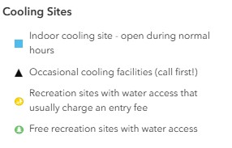
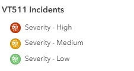
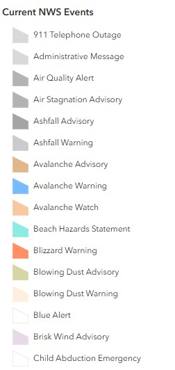

Situational Awareness Map: (VT COP - Overview)¶
The Situational Awareness map provides a comprehensive, real-time view of current conditions across Vermont by integrating multiple data sources to support emergency operations.
 The situational awareness map (named VT Cop - Current) is accessible here. It contains both grouped and ungrouped layers from internal and external sources.
The situational awareness map (named VT Cop - Current) is accessible here. It contains both grouped and ungrouped layers from internal and external sources.
Purpose¶
This map serves as the primary situational awareness guide for:
- Day-to-day monitoring of Vermont conditions
- Initial event assessment
- Coordination between agencies
- Public information briefings
Data Layers¶
Active Layers¶
Layer Visibility
Many layers are only turned on (visbile by Default) seasonally or during SEOC activation. For example, Flood Recovery Centers would only be turned on by default during a flood disaster.
| Group | Layer Name | Symbology | Source |
|---|---|---|---|
| VT EOCs - Status | Classified by status |
VEM | |
| WebEOC Shelter Status | Classified by status |
VEM | |
| Flood Recovery Centers | Classified by center status |
VEM | |
| Cooling Sites | Classified by SiteTypeMap |
VDH | |
| Red Cross Trailer Locations | ESRI basic point | Red Cross | |
| Traffic | VT 511 Incidents | Classified by severity |
VT 511 |
| Traffic | VT 511 Waze Reports | Classified by ReportType |
VT 511 |
| Traffic | VT 511 Cameras | ESRI basic point | VT 511 |
| Weather | USA Storm Reports | Classified by INCIDENT_TYPE |
NOAA |
| Weather | NOAA Hail Storm Reports | ESRI basic point | NOAA |
| Weather | NOAA Wind Storm Reports | ESRI basic point | NOAA |
| Weather | Current NWS Events | Classified by Subject Type |
NOAA |
| Weather | NOAA Severe Thunderstorm Warnings | ESRI basic polygon | NOAA |
| Weather | NOAA Tornado Warnings | ESRI basic polygon | NOAA |
| Weather | NOAA Flash Flood Warnings | ESRI basic polygon | NOAA |
| Weather | NOAA Special Marine Warnings | ESRI basic polygon | NOAA |
| Weather | Active Hurricanes, Cyclones, & Typhoons | Multiple layers | NOAA |
| Fire | Vermont Fire Danger (Daily) | Classified by FIREDANGER |
VTFPR |
| Fire | Current Wildfire Incidents | Classified by Wildfire Incidents (Acres) |
NIFC |
| Fire | Current Wildfire Perimeters | Classified by Category |
NIFC |
| FEMA | FEMA Designated Counties | Classified by designate |
FEMA |
| FEMA | FEMA Emergency Designated Counties | ESRI basic polygon | FEMA |
| Air Quality | AirNow Air Quality | Classified by Ozone & PM AQI |
EPA |
| Air Quality | Canada Wildfire Smoke Forecast | ESRI Image Service | ESRI |
| Drought | Public Reports CMOR | ESRI basic point | CMOR |
| Drought | US Drought Monitor -Current | Classified by DM |
USDM |
Tables¶
These feature services are not symbolized on the map but are used to populate widgets.
| Group | Layer Name | Type | Source |
|---|---|---|---|
| Tables | Boil Water Notices | No Symbology | VTANR |
| Tables | Boil Water Notices - Storm Related | No Symbology | VTANR |
| Tables | Reported Spills (ANR) | No Symbology | VTANR |
Reference Layers¶
| Group | Layer Name | Type | Source |
|---|---|---|---|
| Boundaries | U.S. States and Territories | Polygon | NOAA |
| Boundaries | Vermont Counties | Polygon | VCGI |
| Boundaries | NA Political Divisions Polygons (mask) | Polygon | NAEA |
Layer Details¶
Internal Sources¶
The following layers are consumed from VEM's AGO. Some of these layers pull data entered into WebEOC boards by VEM or AHS, others include data extracted from external sources using ETL Python notebooks.
VT EOC - Status
Source: VEM AGO Feature Layer
Geometry Type: Point
Coordinate System: Vermont State Plane (EPSG:32145)
Update Method: Manually updated by VEM during activations
Pop-Up Attributes:
name: EOC location nameaddress: Full addresstown: Town namestatus: Level 1 - Normal Operations, Level 2 - Enhanced Operations, Level 3 - Partial Activation, Level 4 - Full Activation, Inactive, Unknowntype: Municipal EOC, State of Vermont EOCsite_preference: Primary Location, Alternative Locationnotes: Relevant notes
Symbology:
Color-coded by Status
Icon: EOC symbol imported from NAPSG Resources Stylesheet

EOC Status Updates
Municipal EOC updates are inconsistent and often aren't updated after an EOC closes. Verify current status with local EMD before directing individuals.
WebEOC Shelter Status
Source: VEM AGO Feature Layer
Geometry Type: Point
Coordinate System: Web Mercator (EPSG:3857)
Update Method: Manually updated by AHS during activations
Pop-Up Attributes:
shelter_name: Facility nameaddress: Street addresstown: Town/city- NEED TO UPDATE LINK AND FIELDS AFTER NEW BOARD IS PUBLISHED
Symbology:
Color-coded by Status
Icon: EOC symbol imported from ESRI Public Safety Stylesheet

Shelter Status Updates
VT shelter status is manually updated by AHS via WebEOC. Verify current status with AHS before directing individuals.
Flood Recovery Centers
Source: VEM AGO Feature Layer
Geometry Type: Point
Coordinate System: Web Mercator (EPSG:3857)
Update Method: Manually updated by AHS during activations
Pop-Up Attributes:
name: Center nameaddress: Full addresscenter_type: State Disaster Recovery Center (SDRC), Federal Disaster Recovery Center (FDRC)center_status: Today, Past, Futuremanager_name: Center managermanager_phone: Manager phone numberstart_date: Center opening dateend_date: Center closing datefema_present: FEMA representative at center (Yes, No)ahs_present: VT Agency of Human Services representative at center (Yes, No)redcross_present: Red Cross representative at center (Yes, No)sal_army_present: Salvation Army representative at center (Yes, No)dfr_present: VT Department of Financial Regulation representative at center (Yes, No)dfs_present: VT Division of Fire Safety representative at center (Yes, No)uw_present: United Way representative at center (Yes, No)vdol_present: VT Department of Labor representative at center (Yes, No)aoe_present: VT Agency of Education representative at center (Yes, No)esd_present: VT Economic Services Division representative at center (Yes, No)da_present: VT Designgated Agencies for Mental Health representative at center (Yes, No)vdh_present: VT Department of Health representative at center (Yes, No)days_open: Mondays & Fridays, Tuesdays & Fridays, Wednesday & Sundays, Thursdays
Symbology:
Color-coded by Status
Icon: Shelter symbol imported from ESRI Public Safety Stylesheet

Recovery Center Status Updates
VT recovery center status is manually updated by AHS via WebEOC. Verify current status with AHS before directing individuals.
VT 511 Waze Reports
Source: VT 511
Geometry Type: Point
Coordinate System: Web Mercator (EPSG:3857)
Update Method: Needs to be updated using a Python Notebook hosted in VEM's AGO
Pop-Up Attributes:
description: Summary of incidentstreet: Street addresscity: Vermont City/Townlast_update: Last update timereport_type: Incident type (e.g., construction, accident, etc.)report_time: Original report time
Color-coded by report_type
Icon: Point symbol from ESRI basic points

VT 511 Waze Updates
During an SEOC activation, this layer needs be upted by running a Python notebook to dispaly up-to-date information.
There is often a delay in closing out VT 511 waze reports. Verify current status with live VT 511 website before directing individuals.
External Sources¶
The following layers are consumed from external, authoritative sources. These sources include Vermont agencies and departments and external partners like the NWS, USGS, FEMA, etc.
Cooling Sites
Source: VEM AGO Feature Layer
Geometry Type: Point
Coordinate System: Web Mercator (EPSG:3857)
Update Method: Manually updated by VDH
Pop-Up Attributes:
SiteName: Cooling center location nameSiteType: Shelter location type (e.g., Recreational Center, Library, Police Department, etc.)SiteTypeMap: Indoor cooling site - open during normal hours, Occasional cooling facilities (call first), Recreation sites with water access that usually charges an entry fee, Free recreation sites with water access.ADACompliant: Yes, No, UnknownAddress: Street addressCity: Town nameCounty: Vermont countyBeachClosure: Open, Closed, UnknownContactPhone: Site phone numberCoolingCenter: Yes, NoEntryFee: Yes, No, UnknownExtended Hours: Yes, No, Possible, call to check, Possible during an emergency, Possible during a heat emergency, UnknownGeneratorOnSite: Yes, No, UnknownHoursOfOperation: Site hours of operation (variable)OtherAmenities: Books and games, Movies, Showers, Wi-fi, UnknownOtherCoolingCenterAmenities: Seating in shade, Space for pets, None, Unknown, Shade Tent, etc.OvernightShelterFacilities: Yes, No, UnknownParking: Yes, No, UnknownPetFacilities: Yes, No, No, but pets are welcome outside, Service animals onlyPowerForMedicalEquipment: Yes, No, UnknownPublicTransportation: Yes, No, UnknownRefrigeratorForMedications: Yes, No, UnknownRestroomsAvailable: Yes, No, UnknownSitesCyanoReported: # of cyanobacteria reports for siteSuncreenDispenser: Yes, No, UnknownVDHDistrict: Defined by Vermont countiesWaterAvailable: Yes, No, UnknownWebsite: Cooling site website if available
Symbology:
Color-coded by SiteTypeMap
Icon: Geometric symbols imported from ESRI basic points

{kind=link}
Cooling Center Updates
Cooling site information is manually updated VDH. Verify current status with VDH before directing individuals.
Red Cross Trailer Locations
Source: Red Cross
Geometry Type: Point
Coordinate System: Web Mercator (EPSG:3857)
Update Method: Manually updated by ARC during activations
Pop-Up Attributes:
ARC_Use: Distribution of Emergency Supplies, Logistics Trailer, Shelter Trailer, Logistics Trailer - Pet, Logistics Trailer - Mass CasualtyDeployed_Location_Name: Name of location where trailer is deployedDL_Address: Street address of deployed locationDL_City: City/Town of deployed locationDL_County: County of deployed locationDL_Zip_Code: Zip of deployed locationHoused_Location_Name: Name of location where trailer is normally housedHL_Address: Street address of housed locationHL_City: City/Town of housed locationHL_County: County of housed locationHL_Zip_Code: Zip of housed locationStatus: Available, UnavailableTag: Trailer license plate #Tag_State: State where trailer is registeredTemporary_Location: Temporary location, undeployedElement_Unit#: Red Cross trailer ID numberAxles: Single, DoubleTow_Ball_Size: 1 7/8", 2", 2 5/16", 2"VIN: Trailer VIN numberYear_Man_Series_Model: Year, Manufacturer, Series/Model
Symbology:
Color-coded using single symbol style
Icon: Emergency services symbol from ESRI basic points

Trailer Status Updates
Red Cross trailer status is manually updated by ARCC. Verify current status with ARC before directing individuals.
VT 511 Incidents
Source: VT 511
Geometry Type: Point
Coordinate System: Vermont State Plane (EPSG:32145)
Update Method: Regularly updated by VTrans
Pop-Up Attributes:
description: Summary of incidentcity: Vermont City/Towncreatedtimestamp: Time of creationdirection: Cardinal direction of lane travel (East, West, North, South)severity: Primary Location, Alternative Locationstartdate: Indicent start datestarttime: Incident start timeenddate: Indicent end date
Symbology:
Color-coded by Status
Icon: Accident symbol imported from ESRI Public Safety Stylesheet

{kind=link}
VT 511 Updates
There is often a delay in closing out VT 511 incidents. Verify current status with live VT 511 website before directing individuals.
VT 511 CCTV Images
Source: VT 511
Geometry Type: Point
Coordinate System: Vermont State Plane (EPSG:32145)
Update Method: Automatically updated by VTrans CCTV feature layer service
Pop-Up Attributes:
name: Name of location where CCTV camera is locatedroadway: Road/highway name where CCTV is locateddirection: Direction camera is viewingstatus: DeviceOnline, DeviceOfflineTimestamp: Timestamp of most recent image
Symbology:
Color-coded by report_type
Icon: Camera symbol from ESRI basic points
{kind=link}
VT 511 CCTV Updates
CCTV images are taken at intervals throughout the day, so every image is out-of-date by the time it's being viewed. Verify current status with DPS or VTrans before directing individuals.
USA Storm Reports (past 24 hours)
Source: NOAA
Geometry Type: Point
Coordinate System: Web Mercator (EPSG:3857)
Update Method: Updated daily by NOAA/NWS
Pop-Up Attributes:
INCIDENT_TYPE: Type of storm incident (e.g., Heavy Snow, Snow, Sleet, Hail, etc.)LOCATION: Description of locationINCIDENT_DATETIME: Timestamp for storm reportCOUNTY: County nameSTATE: State nameCOMMENTS: Relevant comments
Symbology:
Color-coded by report_type
Icon: Pre-defined symbology by NOAA

Filter:
Filtered by HOURS_OLD and location

Data Limitations
Weather alert data may be delayed during severe weather events when NWS systems experience heavy load.
NOAA Hail Storm Reports (past 24 hours)
Source: NOAA
Geometry Type: Point
Coordinate System: Web Mercator (EPSG:3857)
Update Method: Updated daily by NOAA/NWS
Pop-Up Attributes:
LOCATION: Description of locationUTC_DATETIME: Timestamp for hail reportCOUNTY: County nameSTATE: State nameCOMMENTS: Relevant comments
Symbology:
ESRI basic point
Icon: Pre-defined symbology by NOAA

Filter:
Filtered by STATE

NOAA Wind Storm Reports (past 24 hours)
Source: NOAA
Geometry Type: Point
Coordinate System: Web Mercator (EPSG:3857)
Update Method: Updated daily by NOAA/NWS
Pop-Up Attributes:
LOCATION: Description of locationUTC_DATETIME: Timestamp for hail reportCOUNTY: County nameSTATE: State nameCOMMENTS: Relevant comments
Symbology:
ESRI basic point
Icon: Pre-defined symbology by NOAA

Filter:
Filtered by STATE

Current NWS Events
Source: NOAA
Geometry Type: Polygon
Coordinate System: Web Mercator (EPSG:3857)
Update Method: Updated daily by NOAA/NWS
Pop-Up Attributes:
Event: NWS event type (e.g., Flash Flood Watch, Fire Warning, Winter Weather Advisory, etc.)Affected: Geographic areas affectedSummary: Concatonated summary of event, time period of event, and issuing NWS office.Updated: Time/date last updatedStart: Start time of event noticeEnd: End time of event noticeDescription: Detailed description of the NWS eventInstruction: Authoritative instructions for how to prepare/respond to NWS event
Symbology:
Color-coded by Subject Type
Icon: Pre-defined symbology by NOAA

{kind=link}
Filter:
Filtered by Summary Overview

Data Limitations
Weather alert data may be delayed during severe weather events when NWS systems experience heavy load. Polygons represent alert zones, not exact impact areas.
NOAA Severe Thunderstorm Warnings
Source: NOAA
Geometry Type: Polygon
Coordinate System: Web Mercator (EPSG:3857)
Update Method: Updated daily by NOAA/NWS
Pop-Up Attributes:
UTC_ISSUE: Date/time warning was issuedUTC_EXPIRE: Date/time warning expires
Symbology:
ESRI basic polygon
Icon: Pre-defined symbology by NOAA

Filter:
Filtered by Weather Forecast Office = BTV OR Weather Forecast Office = ALY

NOAA Tornado Warnings
Source: NOAA
Geometry Type: Polygon
Coordinate System: Web Mercator (EPSG:3857)
Update Method: Updated daily by NOAA/NWS
Pop-Up Attributes:
UTC_ISSUE: Date/time warning was issuedUTC_EXPIRE: Date/time warning expires
Symbology:
ESRI basic polygon
Icon: Pre-defined symbology by NOAA

Filter:
Filtered by Weather Forecast Office = BTV OR Weather Forecast Office = ALY

NOAA Flash Flood Warnings
Source: NOAA
Geometry Type: Polygon
Coordinate System: Web Mercator (EPSG:3857)
Update Method: Updated daily by NOAA/NWS
Pop-Up Attributes:
UTC_ISSUE: Date/time warning was issuedUTC_EXPIRE: Date/time warning expires
Symbology:
ESRI basic polygon
Icon: Pre-defined symbology by NOAA

Filter:
Filtered by Weather Forecast Office = BTV OR Weather Forecast Office = ALY

NOAA Special Marine Warnings
Source: NOAA
Geometry Type: Polygon
Coordinate System: Web Mercator (EPSG:3857)
Update Method: Updated daily by NOAA/NWS
Pop-Up Attributes:
UTC_ISSUE: Date/time warning was issuedUTC_EXPIRE: Date/time warning expires
Symbology:
ESRI basic polygon
Icon: Pre-defined symbology by NOAA
{kind=link}
Filter:
Filtered by Weather Forecast Office = BTV OR Weather Forecast Office = ALY

Active Hurricanes, Cyclones, and Typhoons
Source: NOAA
Geometry Type: Points, Lines, Polygons
Coordinate System: Web Mercator (EPSG:3857)
Update Method: Updated daily by NOAA/NWS
Grouped Feature Layer
This grouped service contains the following layers, which depict active hurricanes and associated storm characteristics.
- Forecast Position
- Observied Position
- Forecast Track
- Observed Track
- Forecast Error Cone and Danger Area
- Watches and Warnings
- Tropical Storm Force (34kts)
- Tropical Storm Force (50kts)
- Tropical Storm Force (64kts+)
- Raw 1 10th Degree Data (All)
- Observed Wind Swath
Symbology:
Point, Polyline, Polygon
Icon: Pre-defined symbology by NOAA

Vermont Fire Danger (Daily)
Source: VTFPR
Geometry Type: Polygon
Coordinate System: Vermont State Plane (EPSG:32145)
Update Method: Updated daily by Vermont FPR
Pop-Up Attributes:
FIREDANGER: LOW, MODERATE, HIGH, VERY HIGH, EXTREMEFDRA: Fire danger rating area identifier (e.g., FDRA2, FDRA3, etc.)NOTES: Relevant notes shared by VT FPR staff
Symbology:
ESRI basic polygon
Icon: Pre-defined symbology by VTFPR

Current Wildfire Incidents
Source: NIFC
Geometry Type: Polygon
Coordinate System: WGS1984 (EPSG:4326)
Update Method: Manually updated by the NIFC
Pop-Up Attributes: (based on Wildfire Data Dictionary - IRWIN SCHEMA)
INCIDENTNAME: Fire incident nameUNIQUEFIREIDENTIFIER: Unique identifier assigned to each wildland fireCALCULATEDACRES: the number of acres within the current perimeter of a specific, individual incident, including unburned and unburnable islandsDAILYACRES: A measure of daily acres reported for a fire.CAUSE: Broad classification of the reason the fire occurred identified as human, natural or unknownCONTROLDATETIME: The date and time a wildfire was declared under controlFINALACRES: Reported final acreage of incidentFIREDISCOVERYDATETIME: The date and time a fire was reported as discovered or confirmed to exist. May also be the start date for reporting purposesCONTAINMENTDATETIME: The date and time a wildfire was declared containedFIREOUTDATETIME: The date and time when a fire is declared outMODIFIEDONDATETIME: Date/time that the IRWIN Incident record was last modifiedPERCENTCONTAINED: Indicates the percent of incident area that is no longer active.FATALITIES: The total number of deaths of personnel assigned to an incidentINJURIES: The total number of reportable occupational injuries and illnesses that occurred in conjunction with an incidentRESIDENCESDESTROYED: The total number of residences destroyed, or damaged to an extent requiring rebuilding, as a result of a fireOTHERSTRUCTURESDESTROYED: The total number of structures, other than residences, destroyed as a result of a fireTOTALINCIDENTPERSONNEL: The total number of personnel assigned. Includes overhead, crewmembers, helicopter crewmember, engine crewmembers, camp crew people, etc.
Symbology:
Fire symbol imported from ESRI Public Safety Stylesheet
Icon: Pre-defined symbology by NIFC

Current Wildfire Incidents Updates
This layer may not reflect the most current wildfire locations (there is often a delay in updating).
Current Wildfire Perimeters
Source: NIFC
Geometry Type: Polygon
Coordinate System: WGS1984 (EPSG:4326)
Update Method: Manually updated by the NIFC
Pop-Up Attributes: (based on Wildfire Data Dictionary - IRWIN SCHEMA)
INCIDENTNAME: The incident name as stored in the polygon source recordCALCULATEDACRES: the number of acres within the current perimeter of a specific, individual incident, including unburned and unburnable islandsCREATEDATE: System generated date for the date time the source polygon record was created (stored in UTC)UNITID: NWCG Unit Identifier to identify the unit with jurisdiction for the land where the point of origin of a fire falls
Symbology:
ESRI basic polygon
Icon: Pre-defined symbology by NIFC

Current Wildfire Perimeters Updates
This layer may not reflect the most current wildfire perimeters (there is often a delay in updating).
Designated Counties
Source: FEMA
Geometry Type: Polygon
Coordinate System: WGS1984 (EPSG:4326)
Update Method: Manually updated by the FEMA
Pop-Up Attributes:
dec_number: Complete FEMA disaster declaration identification numberdesignate: The type of assistance designated in declaration or amendment (e.g., individual assistance, public assistance)name: Designated county namedec_num_int: FEMA disaster declaration identification numberfema_postdate: The date the data was posted or updated in the systemamd_date: The amendment date of a FEMA disaster declaration
Attribute Expressions (Arcade):
The original dec_num field was rounded to ensure the value displayed properly using the dec_num_int field.

Symbology:
ESRI basic polygon

Designated Counties Updates
This layer may not reflect the most current disaster declaration during an ongoing SEOC activation (there is often a delay in updating).
Emergency Designated Counties
Source: FEMA
Geometry Type: Polygon
Coordinate System: WGS1984 (EPSG:4326)
Update Method: Manually updated by the FEMA
Pop-Up Attributes:
dec_number: Complete FEMA disaster declaration identification numberdesignate: The type of assistance designated in declaration or amendment (e.g., individual assistance, public assistance)name: Designated county namedec_num_int: FEMA disaster declaration identification numberfema_postdate: The date the data was posted or updated in the system
Attribute Expressions (Arcade):
The original dec_num field was rounded to ensure the value displayed properly using the dec_num_int field.
Symbology:
ESRI basic polygon

Emergency Designated Counties Updates
This layer may not reflect the most current disaster declaration during an ongoing SEOC activation (there is often a delay in updating).
AirNow Air Quality
Source: EPA
Geometry Type: Point
Coordinate System: Web Mercator (EPSG:3857)
Update Method: Automatically updated by the EPA
Pop-Up Attributes:
SITENAME: The text name of the monitoring station (e.g., "Rutland")Site Operational Status: Indicates if the monitor is Active or InactiveData Source: SThe agency managing the monitor (e.g., "Vermont Dept. of Environmental Conservation")Elevation: Ground elevation of the monitoring site above mean sea level (AMSL), usually measured in metersMonitorType: Indicates whether the station is a permanent, fixed installation or a temporary mobile unitOZONE: Current Ozone concentration in parts per billion (ppb)OZONE AQI: The calculated Air Quality Index (AQI) specifically for ozoneOzone & PM AQI: represents the highest AQI value among the available pollutants at that site. This is the value typically used to color-code points on a map because it represents the "controlling" pollutantOzone Measured at Site: Indicates whether the station is equipped with an Ozone sensor (0 = no, 1 = yes)PM2.5: Current Particulate Matter < 2.5 microns in micrograms per cubic meter (µg/m³)PM2.5 AQI: The calculated Air Quality Index (AQI) specifically for PM2.5Pm2.5 Measured at Site: Indicates whether the station is equipped with an PM2.5 sensor (0 = no, 1 = yes)ValidTime: The specific hour (time slice) that the data represents
Symbology:
ESRI basic point
Icon: Pre-defined symbology by EPA

Filter:
Filtered by State Name

Candada Wildfire Smoke Forecast
Source: ESRI
Geometry Type: n/a (Image Service)
Coordinate System: WGS1984 (EPSG:4326)
Update Method: Automatically updated by ESRI
Symbology:
ESRI Image Service
Color Ramp: Pre-defined symbology by ESRI

Public Reports - CMOR
Source: CMOR
Geometry Type: Point
Coordinate System: WGS1984 (EPSG:4326)
Update Method: Automatically updated by the CMOR via public submissions
Pop-Up Attributes:
Description and/or caption information: User submitted observationsSelect a county: County of submission/observationWhat is the date?: Date of submission
Symbology:
ESRI basic point
Icon: Pre-defined symbology by CMOR

Filter:
Filtered by Select a state/territory

CMOR Updates
CMOR submissions are provided via public submission and should be verified prior to mobilizing resources.
US Drought Monitor - Current
Source: USDM
Geometry Type: Polygon
Coordinate System: Web Mercator (EPSG:3857)
Update Method: Manually updated (weekly) by the National Drought Mitigation Center
Pop-Up Attributes:
DM: Drought Monitor Category (e.g., Abnormally Dry, Severe Drought, etc.)DMArea_Units: The raw area of the drought polygon in square miles (mi²)CatagoricalPerct: The percentage of the area exclusively in each specific drought categoryCumulativePerct: This is the "or worse" statistic. It represents the percentage of the area in the specific drought category plus all more severe categoriesReleaseDate: The release date of the updated feature layerValidStart: The start date of the observation weekValidEnd: The end date of the observation week
Attribute Expressions (Arcade):
The original DMArea field was rounded and units were added for easier interpretation using the DMArea_Units field.

Symbology:
ESRI basic polygon
Icon: Pre-defined symbology by USDM

Basemap¶
Default: Topographic for visualizing data relative to Vermont's variable topography
Performance Notes¶
For optimal performance with this map:
- Recommended to keep 4-5 layers active simultaneously
- Turn off reference layers when not needed
- Use time filters to limit historical data queries
Related Documentation¶
- Weather Map - More detailed weather data
- Fire Risk Map